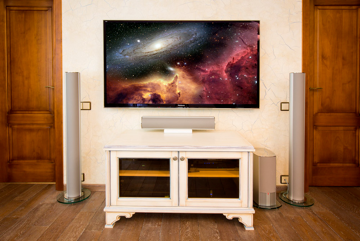
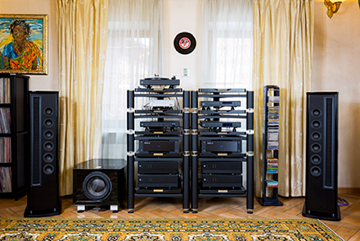
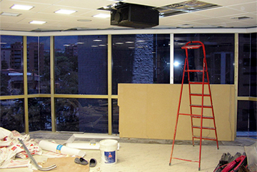
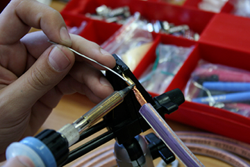

Аудиомания - это не только сеть магазинов, это ещё и большой выбор качественных услуг. Большинство таких услуг предоставляет отдел инсталляций.
Телефон отдела инсталляций: 8 (495) 268-04-50
Прослушивание на дому Аудиомания рада предложить вам эксклюзивную услугу – прослушивание техники у вас дома. К примеру, вы выбрали две модели акустических систем, но сказать наверняка, как они будут звучать у вас дома, не сможет никто. Закажите услугу "Прослушивание на дому", и вы сможете на месте выбрать самый подходящий вариант. Цены и детали
Установка, подключение и настройка компонентов Приобретаете новые компоненты и не уверены в том, что сможете правильно поставить и подключить? Все сотрудники отдела инсталляций имеют огромный опыт в этом деле. Просто закажите установку техники – остальное сделают профессионалы.
Проектирование и установка (инсталляция) домашних кинотеатров и стереосистем Аудиомания готова взять на себя не только установку и подключение техники, но и полный комплекс работ от проектирования домашних кинотеатров и комнат прослушивания музыки до готового результата. Вы хотите, чтобы всё было сделано правильно – мы приложим все свои силы для реализации вашей задумки.

Изготовление кабелей на заказ
Подбираете акустический или межблочный кабель?
Нужен хороший кабель нестандартной длины или
конфигурации? Нужны качественные разъёмы и
кабель в нарезку? Нужны консультации по подбору
кабелей для стереосистем или домашних кинотеатров? Вы инсталлятор?
Если хотя бы на один из этих вопросов
Вы отвечаете "да", тогда эта услуга для Вас.